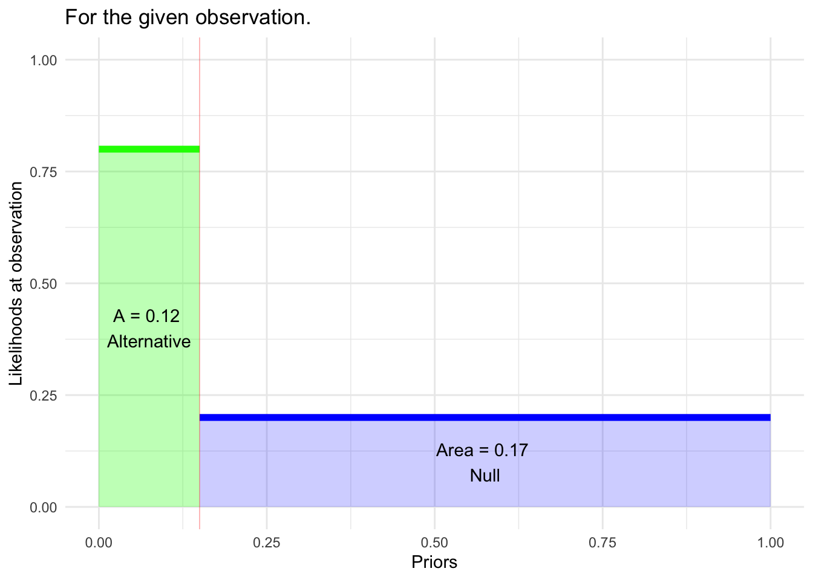
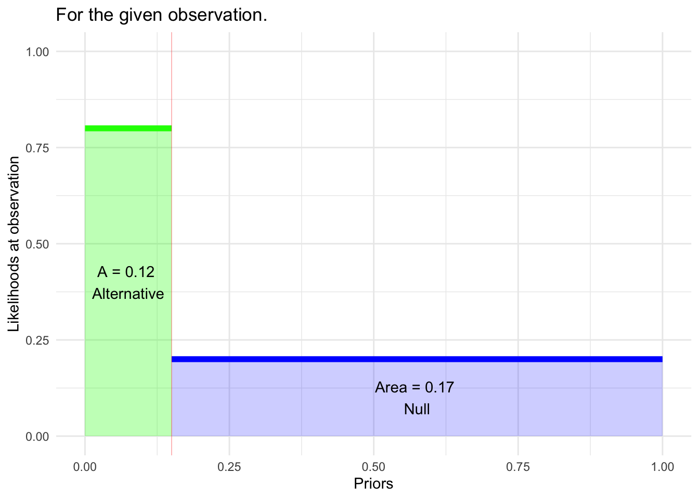

hypothesis_compete_graph(prior=.15, like1=0.8, like2=0.2)
The Bayesian paradigm provides a complete framework for competing two hypotheses against one another. We introduced that framework in the context of screening tests where the hypotheses—diseased vs healthy—are concrete, the likelihoods—p(\(\mathbb P\)) | diseased) and p(\(\mathbb P\) | healthy)—can be found by cross tabulation of test results and disease state.
This essay contrasts the Bayesian framework with Fisher’s significance testing and Neyman-Pearson hypothesis testing. The point is to show what each of these testing frameworks leaves out. To simplify the comparison, we’ll use Null and Alternative as the names for the two Bayesian hypotheses, even though Bayes allows a more general choice (or even multiple hypotheses).
Here is a graphic showing the three inputs to the Bayesian calculation of the posterior probability p(Alternative | obs ): i. the prior p(Alternative) and the two likelihoods ii. p(obs | Alternative) and iii. p(obs | Null).
hypothesis_compete_graph(prior=.15, like1=0.8, like2=0.2)
The three frameworks—Bayes, Significance, and Neymann-Pearson—all produce a outcome after data have been collected. In Bayes, this structure is more evident from the name “posterior” for the outcome, but it’s equally true in the other two frameworks.
The Bayes and Neymann-Pearson frameworks involve two stages; one can occur before the data observations are made, the other only after the observations.
In Neymann-Pearson, the set-up amounts to the study design:
These three items go into a calculation of the “power” of the test. The power is the conditional probability that the outcome of the test will be to reject the Null. The “given” part of the conditional probability is the Alternative hypothesis. Calculation of the power is done by simulation (or the algebraic equivalent); power does not depend on the eventual observation.
Study design is an iterative process which aims to find a feasible study design that maximizes the power. A study design which achieves a power of 80% is generally considered adequate.
In Bayes the set-up involves:
Significance testing has no set-up phase. This is one of the most attractive features of the framework.
Neither Significance nor Neymann-Pearson need a prior to be specified for either hypothesis. Bayes requires a prior for both. [In the Bayesian framework, the prior on the Null is simply 1 minus the prior on the Alternative. So only one of the priors needs to be specified.]
::: {#fig-fisher-neymann diagrams .cell .column-page-right layout-ncol=“2”} ::: {.cell-output-display}  {#fig-fisher-neymann diagrams-1 width=672} :::
{#fig-fisher-neymann diagrams-1 width=672} :::
 {#fig-fisher-neymann diagrams-2 width=672}
{#fig-fisher-neymann diagrams-2 width=672}
Modification of the Bayes diagram showing the information used to determine the outputs from the Significance framework and Neymann-Pearson framework. :::
Significance framework: The likelihood of the observation under the Null hypothesis is calculated and called the “p-value.” If p is small (usually p < 0.05) then the output is “reject the Null.” Otherwise the output is “fail to reject the Null.”
Neymann-Pearson framework: Same as for the Significance framework. (Note that the power isn’t used for the calculation of the test output. It’s only involved in the study design.)
Bayes framework: The test output is a posterior probability, not a phrase like “reject the Null.” Calculation of the posterior can be stated in terms of the two areas shown in the graph:
p(Alternative | Obs) = green/(green + blue)
For the example in Figure 1, this amounts to 0.12/(0.12+0.17) = 41%. That’s about three times larger than the prior on the Alternative.
The output of the Significance and Neymann-Pearson tests is always the same, at least if the study design calculated under Neymann-Pearson happened to be the same as for Significance testing.
The output from the Bayes framework can be compatible or not, depending as it does on the choice of prior and the likelihood under the Alternative hypothesis.
Purely for the sake of comparison, let’s look at the Significance and Neymann-Pearson calculations as if there were a meaningful prior in those frameworks.
The Bayesian paradigm is not limited to considering only two hypotheses; that’s just one setting for it. Let’s adopt this setting, accepting the names “Null” and “Alternative” for the two competing hypotheses. The Bayesian calculation of the posterior requires statement of a prior for each of the hypotheses. (The prior for one hypothesis will be one minus the prior of the other.)
There is a nice version of the Bayes calculation in terms of the likelihood ratio and prior and posterior odds.
\[\underbrace{odds(H_a | \text{obs})}_{\Large\text{posterior for } H_a} = \underbrace{\left[\frac{{\cal L}_a(\text{obs})}{{\cal L}_0(\text{obs})} \right]}_{\Large\text{Likelihood ratio}}\ \times\ \underbrace{odds(H_a)}_{\Large\text{prior for } H_a}\]
If we stipulate that the same prior odds applies to all three frameworks, the critical quantity in shaping the posterior odds is the “likelihood ratio.” A large likelihood ratio pushes the posterior odds on the Alternative higher, which is analogous to “reject the Null.”
The argument being made here is that a small p-value corresponds to a large likelihood ratio.
In Significance testing, there is no such thing as \({\cal L}_a(obs)\): the only quantity that comes into the test is \({\cal L}_0(obs)\). The same is true in Neymann-Pearson, but the “power” has a similar spirit to \({\cal L}_a(obs)\). Let’s use 80% (the convention for adequate power) is a placeholder for \({\cal L}_a(obs)\), but the precise value is not critical to the argument, just that there is some non-zero placeholder.
In Significance and Neymann-Pearson \({\cal L}_0(obs)\) is called the p-value. A low p-value (conventionally, p < 0.05) argues against the Null. Using the placeholder for \({\cal L}_a(obs)\), a low p-value leads to a high likelihood ratio, which argues for the Alternative.
Since the Significance framework has nothing even analogous to \({\cal L}_a(obs)\), the choice of the threshold level (e.g. p < 0.05) is never informed by the setting for data collection.
In Neymann-Pearson, the power is analogous to \({\cal L}_a(obs)\). Using a power of 80%, then p < 0.05 corresponds to a likelihood ratio of 16 or more. Likelihoods in this range are often described as providing “strong evidence” in favor of the Alternative.
It is common to describe the p-value as measuring the “strength of evidence” against the Null hypothesis. For instance, p=0.10 is described as “weak” evidence, while \(p=0.001\) constitutes “strong” evidence.
In the Bayes framework, “strength of evidence” can be given a reasonable mathematical definition: the likelihood ratio. The “strength of evidence” is the balance (or lack thereof) between \({\cal L}_0(obs)\) and \({\cal L}_a(obs)\).
In the Significance and Neymann-Pearson frameworks, there is no such thing as \({\cal L}_a(obs)\). Lacking that, \({\cal L}_0(obs)\) has nothing to be balanced against. In other words, without a \({\cal L}_a(obs)\), there is no way to define what constitutes a very “small” \({\cal L}_0(obs)\). “Small” can only be defined relevant to the general convention, p < 0.05, which is arbitrary. The only way in which a p-value like 0.001 is “small” is that it is below 0.05. No further claim is justified.
Fairness to Fisher and the Significance framework requires that his actual description of the method (e.g. p < 0.05) be considered, as opposed to the interpretation that is been layered on top of it by later research workers.
In his 1926 paper introducing Significance testing, Fisher wrote about the 0.05 (“one in twenty”) threshold. Note that he uses the phrase “high enough odds” where today we would say “low enough p-value.”
“If one in twenty does not seem high enough odds, we may if we prefer it, draw the line at one in fifty (the 2 per cent. point), or one in a hundred (the 1 per cent. point). Personally, the writer prefers to set a low standard of significance at the 5 per cent. point, and ignore entirely all results which fail to reach this level.”
Up to this point in his narrative, Fisher’s description does not deviate from contemporary practice with \(p < 0.05\), although “ignore entirely” doesn’t align with those today who interpret \(p > 0.05\) as supporting the Null.
But in the next sentences, Fisher describes what it takes for “a scientific fact [to] be regarded as experimentally established,” which I take to be much the same thing as “strength of evidence.”
“A scientific fact should be regarded as experimentally established only if a properly designed experiment rarely fails* to give this level of significance. The very high odds sometimes claimed for experimental results should usually be discounted, for inaccurate methods of estimating error have far more influence than the particular standard of significance chosen.*”
Neymann-Pearson’s “alternative hypothesis” and “power” are a mathematical statement of what constitutes a “properly designed experiment” and “rarely fails.”